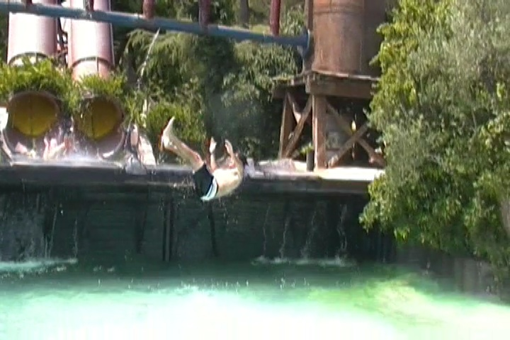
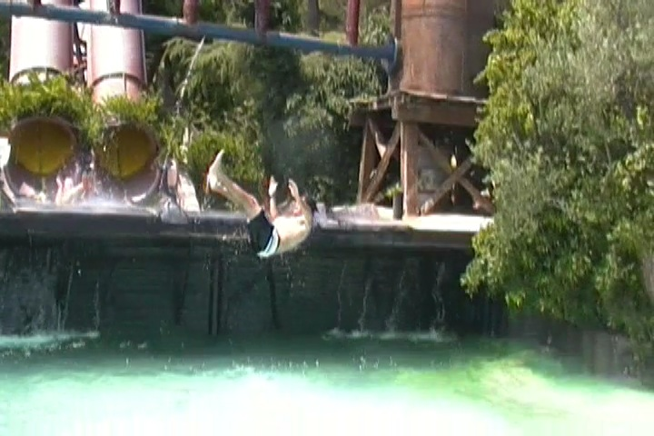

Welcome to an Incrediblecoasters Top 10 List. When we list stuff, we actually explain why. Water Slides. They are the staple of the water park (duh) and are extremely popular with guests. With Summer being here, and the heat getting hotter and hotter, people want a chance to both have fun and cool off. and nothing does that better than a good water slide. No wonder they're so popular. Have you ever seen the lines at water parks. They're huge!!!! In fact, I think water slides may actually be just as, if not more popular than rollercoasters. So yeah. That says a lot about water slides. And of course, with great popularity comes great variety (usually). And yeah. There's a big variety of water slides. And it's not just tube slide VS body slide nowadays. There are all sorts of water slide types nowadays. Drop Slides, Speed Slides, Racing Slides, Tornados, Toilet Bowls, the list goes on and on. But then you go and ask yourself "With so many water slides to choose from out there, which ones are the best ones?" What are the water slides that will most make you smile or scream "OH SH*T!!!!!!!" Well, we don't know for sure considering how we aren't anywhere close to riding all the water slides out there. Several of which look freaking amazing. However, we can show you 10 different water slides that are totally awesome and kick major ass. These is the Top 10 Water Slides.
Located at Schlitterbahn, this is one of their more famous water slides. Its not featured on the Travel Channel nearly as much as Master Blaster, but man is this the better slide. I mean, just look at all that this water slide offers!! Music, Spinning Tunnels, Theatrical Lighting, Fog, Fake Fire, and an encounter with a dragon. And UNLIKE a certain water slide that promised similar stuff, but just lied to you *cough* Dr. Von Dark *cough*, this slide actually delivers!!! Ok, not COMPLETELY. I'd be lying if I told you that the lighting is of theater quality. But hey!!! There really is music. There really is a spinning tunnel. The really is (not theatrical) lighting. There really is fog. And there really is (obvious) fake fire. And to top it all off, its a Master Blaster too!!! In fact, I think this may have been the first one. Sure, Master Blaster may be the first modern one that really made the slides take off. But Dragon's Revenge was not only first, but offers a much more intriguing experience that really sucks the guests in. Definetly make sure you check this ride out when at Schlitterbahn. You won't be dissapointed.
This really makes me sad that Wild Rivers had to close down (F*ck you Irvine Comp!!), cause trust me when I say this. This was truely one of the insane Wild Rivers water slides. Technically there were two sides of the slide. The good slide and the not nearly as good slide. Both are fun and all, but definetly do the one with the drop as that's where the insanity is. After getting your tube, you simply head down the slide. Oh, and did I mention that you can ride the slide backwards? Yeah. That really helps since you can never see where you are going. You're just twisting through all this white water going through turns and bumps when all of a sudden, you head down the drop. And when you go down backwards, its INSANE!!!! One one of our rides, I fell out, scratched my back and kicked Cody in the head and on another one of our rides, we simply flipped over and rode down the rest of the way like a body slide. So yeah. This ride is insane. Congo River Rapids. It's so good, you'll kick your friends in the head.
Now this is kind of debatable about whether it should be on the list. Not because its bad. Good God No!!! It wouldn't be anywhere NEAR here if it was, but because some people wouldn't really call this a water slide as it seems to blend the line between water slide and lazy river. Well let me tell you right away. THIS LAZY RIVER IS NOT LAZY!!!! It's just so much fun!! You have sections where you can just relax, and then there are the sections that are as wild as Congo River Rapids!!! Be prepared to crash into a bunch of tubes blocking your way, and be prepared to laugh and have a good time about it. Now Schlitterbahn is known for its tube chutes. Some of them can be fun, some of them can be relaxing and take up to 45 minutes, and this one is just freaking insane!! I LOVE IT!!! It's just such a fun and unique experience. The Schlitterbahn Tube Chutes. Water slide or Lazy River? Who the f*ck cares!!! Just go out and experience the awesomeness!!! =)
If you're noticing something that's missing up there, you'd be right. For this is in fact, a trapdoor water slide. While once an extremely rare and unique novelty, trap door slides have spread like the plauge throughout the 2010s, and nearly half of all water parks now have a Trap Door slide. And I'm very happy about that for a simple reason. TRAP DOOR WATER SLIDES KICK ASS!!! For anyone who's just flat out not familiar with water slides, a trap door water slide is ESPECIALLY intimidating for them as you can't even look down and see your fate. Just stand in the box, and PLUNK!!! Down you go!!! So why did I choose Bonzai Pipelines out of all the trap doors I've done? Simple. It's just a straight drop down to the bottom. I always loved those big drop slides. They intimidated me as a kid. So to have one as a trap door, that only amps up the excitement. It's always much better than those helix ones. So yeah. Get out and do a trap door at your nearest water park today. Hopefully, it's a straight down one. =)
While this is another generic clone slide, with many slides like it throughout the world. In fact, this type of ride even has different versions. The body slide version, the tube version, and the mega tube version. But it still fits on this list as it's an insane slide. Seriously! These Body Toilet Bowls are INSANE!!!And if you thought Venom Drop or any other drop slide is a back scratcher, ride this or a clone and then come talk to me. This thing is not forgiving on your back, but it's so good that it doesn't matter. While the drop into the bowls may not look very big, it sure is FAST!!! And I mean FAST!!!!!!! And then of course there's the THUMP!!!! That's where the ride gets your back, but you're so busy going through the helix of death, that it doesn't matter. Oh, and did I mention that this ride has the TRUE helix of death? The key word here is TRUE. This isn't just another fake helix of death. This is the real deal. So yeah. Fast Drop, Insane Spinning, and a head first landing. You get the idea of how this slide is insane? Vortex. Get out to SunSplash or wherever and ride it or one of its clones!!!
Located at Aqualand Studios waterpark adjacent to Movieland Studios, this is one of the more rare and unique water slides out there. There's no other water slide...never mind. There is, but still. These kind of water slides are fairly rare. Have you ever been skiing? If so, did you ever jump off of the Ski Jump? Well, this is the water slide version of that. Yeah. A water slide version of a ski jump!! SWEET!!! I mean, it starts off crazy with this drop. It doesn't look that bad until you're up there about to slide down when it seems nearly f*cking vertical!!! Yeah, this is a steep little sucker!!! So yeah, that drop gives you quite a bit of speed. You see this uphill portion, no problem. WHOOP!!! You're up and over. And just like that, you're in the air falling straight towards the pool in whatever direction you can think of. On your side, head first, face plant, I've seen it all. Water Jump. You may not be able to ski for sh*t, but you can still have fun with this.
Located at Wild Rivers, the objective of Bombay Blasters is fairly simple. LAUNCH YOU INTO THE F*CKING POOL!!!!!!!!! And trust me, it does this goal and it does it well. So in a way, its similar to the Water Jump at Movieland Studios, but I prefer Bombay Blasters. After getting on the slide it starts off slow, which is kind of dissapointing. People on this slide tend to say "Hey!!! This slide isn't FAAAAASSSSSSTTTT!!!!!! *splash* Right when you least expect it, it just goes LAUNCH!!!!!!! Right into the freaking pool!!!! And there are two Bombay Blasters, though they rarely run both at the same time, it is awesome as then you can duel. And of course, watching is awesome as you can then see two splashes and have two oppertunities. It's just a few seconds of amazing epicness before splashing into a pool. It's sort of like jumping the Cascade Ponds, except instead of falling vertically, you're being launched horizontally. Bombay Blasters. The ride itself is less than a third of what it took you to read this description of the ride.
Located at Splashing Safari, within Holiday World, Wildebeest is not a hidden gem by any means. It's in fact being ranked as one of the best water slides in the country by other people, and for obvious reasons. This water slide has airtime, fun drops, and even a few laterals. And best of all, there's no work at all required for this ride. You just hop and ride. First off, the slide has a freaking lifthill, which not only means that you don't have to carry your tube up all those stairs, but you don't even need to climb up all those stairs to begin with. You just hop on like a rollercoaster and come along for the ride. You just sit back and enjoy all the drops, hills, laterals, and pops of airtime that Wildebeest has to offer you. And of course, it gets you soaking wet in the process. But yeah. Wildebeest is just so much fun. Worthy of the lines it gets, Worthy of being in Holiday World, and worthy of the title of #3 Water Slide ridden by Incrediblecoasters.
We're back at Splashing Safari to cover their other star attraction. Yep, it's another water coaster. This one is Mammoth. Both are highly rated and claimed to be some of the best water slides ever. The main difference being that Wildebeest is the standard water coaster, while Mammoth is the family raft slide water coaster. Some of you may be thinking "Family Raft Slide? Those are family coasters. Therefor, the family raft water coaster must be tamer and not as good as the regular water coaster". *Laughs* Oh, you're sorely mistaken if you think that Mammoth is a family water slide. Well, actually, it sort of is a family water slide in a way. But not in the sense that it's tame or mild. No, Mammoth is a family water slide in the sense that what it really is, is a Party Water Slide. You have to ride this ride with a large group of people. You gotta get at least four people on this ride. Because not only does this have all the hills, the airtime, and all that fun stuff, but because you're in a family raft, sitting in a circle, the thing spins, and you have no idea what direction you're going down all the drops. Forewards? Backwards? Sideways? Who knows! And on top of that, you see the facial expressions of everyone in your raft, and usually, everyone is laughing, and just having a ball. I think Mammoth is the only family raft water coaster. Please change that because these rides are so good! Mammoth. It's time for a party on the water slide!
Ok, if the Water Jump didn't convince you to visit this place already, then this is gonna seal the deal for you (and lets not forget the fact that Movieland Studios next door is f*cking insane, Gardaland is literally just a few miles away, and Italy is just an awesome country in general). Now while everything on this list is AWESOME, it's not too unique. I mean, Trap Doors and Body Toilet Bowls are very common, but even amongst the unique stuff such as Tube Chutes and the Launching Slides, those are unique, but I can think of other slides that are similar (For instance, Water Jump and Bombay Blasters for instance are both insanely rare and unique, but they're similar and both on this list). But I literally can't think of any water slide like this. This like a water slide you build in RCT2 that's unsafe and the tube flies off the slide, except the tube doesn't explode in real life. And yeah. This slide is absolutely f*cking INSANE!!!! And keep in mind, I'm one of the guys in Robb's video of the wipeout and the INSANE airtime. Yeah, you gotta ride with someone...big (Sorry Nolan) to get the tube that high. But as you can see in the video, it is absolutely INSANE when it does!!! You just FLY down that drop and just shoot over the top!!! Do I really need to expain anymore. Twin Peaks. If you still don't know why I listed this here, then you haven't seen Robb's video of Nolan and I wiping out.
So now I'm sure you know what you're thinking. "Wow. That was the list. That is so wrong." Well no. This is just the current list. I haven't been on every water slide in the world, so until I do, this list is innacurate for a world wide description. There are still many many great water slides out there for me to ride. I know I still haven't been to Wet'N'Wild, or the Disney World Water Parks. So visiting any of these parks would significantly modify the list. And even when I do ride all of them, some water slides will go bad, and new ones will be built, so no list will ever last forever. But still, this list does pay tribute to 10 fantastic water slides that everyone should try if they ever have the chance. And if you could tell, most of the rides on this list had similar qualities which appealed to my taste in water slides. However, water slides can come in many different styles and tastes for all sorts of people. For instance, I still haven't had the chance to try out a Looping Waterslide. That's something I'm really looking foreword to. There are still many other great water slides out there not on this list. Ones that I have ridden and know about and simply didn't make the cut, and ones that I haven't ridden yet and are just waiting to get into the Incrediblecoasters System. Either way, go out and ride a water slide today. They really are awesome.


 
